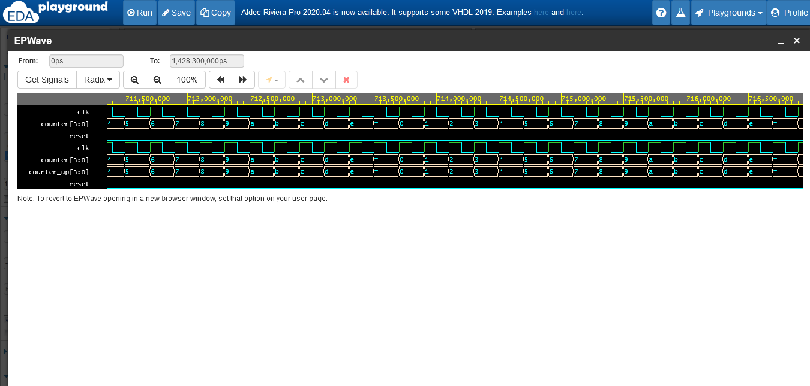

GROUP MEMBERS
- Sakshi shukla
- Pratiksha Vethekar
- Simran pandey
- Shwetakumari singh
OUTPUT
VHDL CODE OF UP-COUNTER WITH TESTBENCH
vhdl code
library IEEE; use IEEE.STD_LOGIC_1164.ALL; use IEEE.STD_LOGIC_UNSIGNED.ALL; -- FPGA projects using Verilog code VHDL code -- fpga4student.com: FPGA projects, Verilog projects, VHDL projects -- VHDL project: VHDL code for counters with testbench -- VHDL project: VHDL code for up counter entity UP_COUNTER is Port ( clk: in std_logic; -- clock input reset: in std_logic; -- reset input counter: out std_logic_vector(3 downto 0) -- output 4-bit counter ); end UP_COUNTER; architecture Behavioral of UP_COUNTER is signal counter_up: std_logic_vector(3 downto 0); begin -- up counter process(clk,reset) begin if(rising_edge(clk)) then if(reset='1') then counter_up <= x"0"; else counter_up <= counter_up + x"1"; end if; end if; end process; counter <= counter_up; end Behavioral;
testbench
library IEEE; use IEEE.STD_LOGIC_1164.ALL; -- FPGA projects using Verilog code VHDL code -- fpga4student.com: FPGA projects, Verilog projects, VHDL projects -- VHDL project: VHDL code for counters with testbench -- VHDL project: Testbench VHDL code for up counter entity tb_counters is end tb_counters; architecture Behavioral of tb_counters is component UP_COUNTER Port ( clk: in std_logic; -- clock input reset: in std_logic; -- reset input counter: out std_logic_vector(3 downto 0) -- output 4-bit counter ); end component; signal reset,clk: std_logic; signal counter:std_logic_vector(3 downto 0); begin dut: UP_COUNTER port map (clk => clk, reset=>reset, counter => counter); -- Clock process definitions clock_process :process begin clk <= '0'; wait for 10 ns; clk <= '1'; wait for 10 ns; end process; -- Stimulus process stim_proc: process begin -- hold reset state for 100 ns. reset <= '1'; wait for 20 ns; reset <= '0'; wait; end process; end Behavioral;